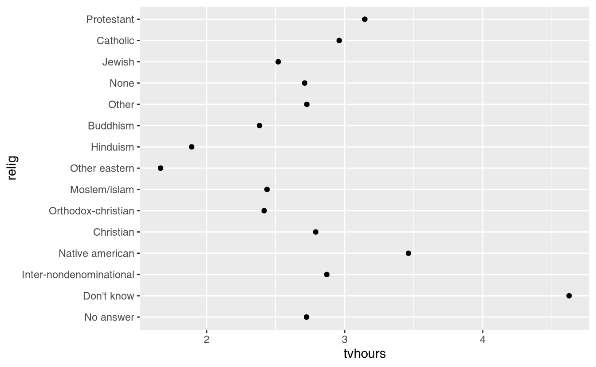
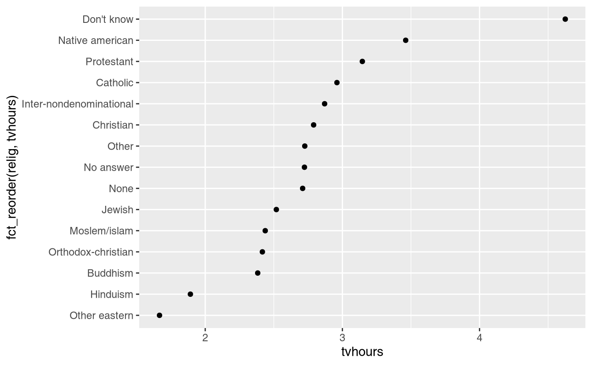
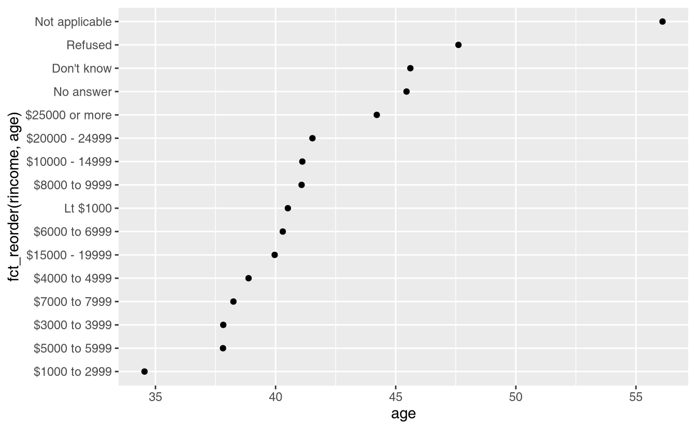
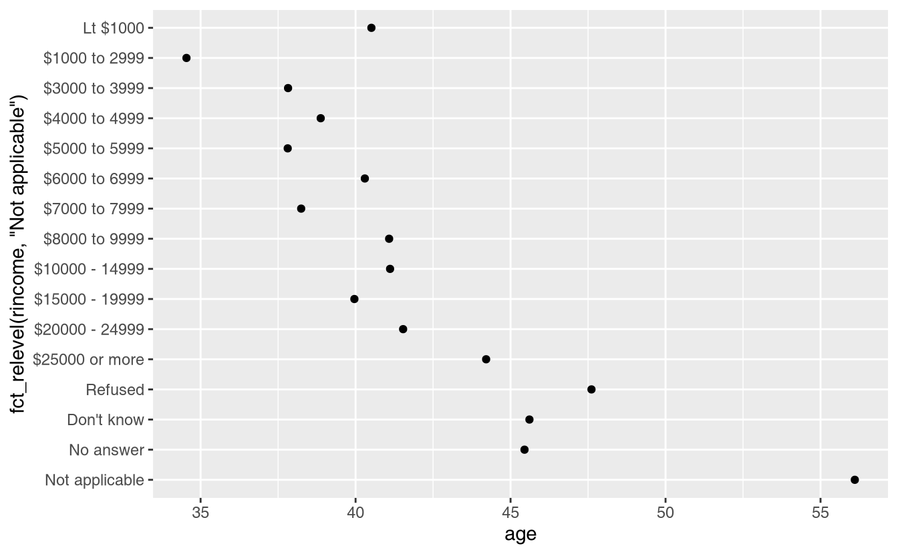
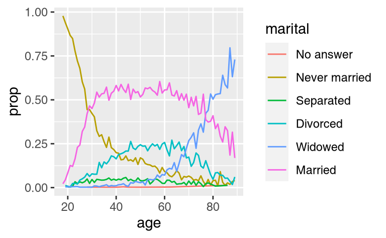
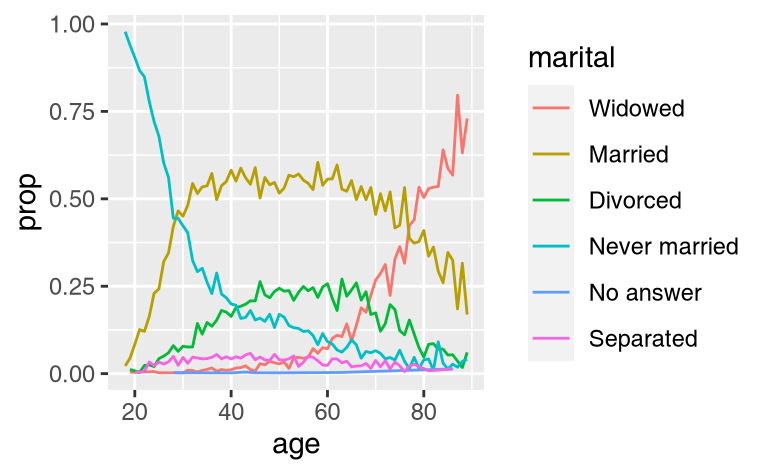
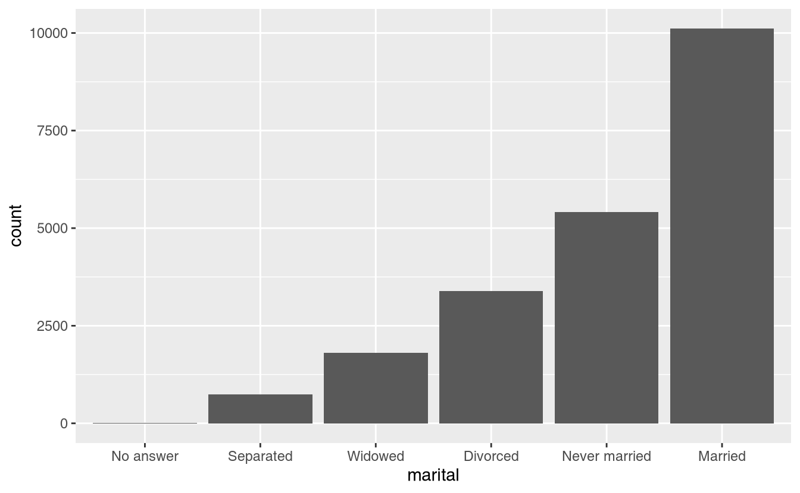

15 Factors
15.1 Introduction
In R, factors are used to work with categorical variables, variables that have a fixed and known set of possible values. They are also useful when you want to display character vectors in a non-alphabetical order.
Historically, factors were much easier to work with than characters. As a result, many of the functions in base R automatically convert characters to factors. This means that factors often crop up in places where they’re not actually helpful. Fortunately, you don’t need to worry about that in the tidyverse, and can focus on situations where factors are genuinely useful.
15.1.1 Prerequisites
To work with factors, we’ll use the forcats package, which is part of the core tidyverse. It provides tools for dealing with categorical variables (and it’s an anagram of factors!) using a wide range of helpers for working with factors.
library(tidyverse)15.1.2 Learning more
If you want to learn more about factors, I recommend reading Amelia McNamara and Nicholas Horton’s paper, Wrangling categorical data in R. This paper lays out some of the history discussed in stringsAsFactors: An unauthorized biography and stringsAsFactors = <sigh>, and compares the tidy approaches to categorical data outlined in this book with base R methods. An early version of the paper help motivate and scope the forcats package; thanks Amelia & Nick!
15.2 Creating factors
Imagine that you have a variable that records month:
x1 <- c("Dec", "Apr", "Jan", "Mar")Using a string to record this variable has two problems:
There are only twelve possible months, and there’s nothing saving you from typos:
x2 <- c("Dec", "Apr", "Jam", "Mar")It doesn’t sort in a useful way:
sort(x1) #> [1] "Apr" "Dec" "Jan" "Mar"
You can fix both of these problems with a factor. To create a factor you must start by creating a list of the valid levels:
month_levels <- c(
"Jan", "Feb", "Mar", "Apr", "May", "Jun",
"Jul", "Aug", "Sep", "Oct", "Nov", "Dec"
)Now you can create a factor:
y1 <- factor(x1, levels = month_levels)
y1
#> [1] Dec Apr Jan Mar
#> Levels: Jan Feb Mar Apr May Jun Jul Aug Sep Oct Nov Dec
sort(y1)
#> [1] Jan Mar Apr Dec
#> Levels: Jan Feb Mar Apr May Jun Jul Aug Sep Oct Nov DecAnd any values not in the set will be silently converted to NA:
y2 <- factor(x2, levels = month_levels)
y2
#> [1] Dec Apr <NA> Mar
#> Levels: Jan Feb Mar Apr May Jun Jul Aug Sep Oct Nov DecIf you want a warning, you can use readr::parse_factor():
y2 <- parse_factor(x2, levels = month_levels)
#> Warning: 1 parsing failure.
#> row col expected actual
#> 3 -- value in level set JamIf you omit the levels, they’ll be taken from the data in alphabetical order:
factor(x1)
#> [1] Dec Apr Jan Mar
#> Levels: Apr Dec Jan MarSometimes you’d prefer that the order of the levels match the order of the first appearance in the data. You can do that when creating the factor by setting levels to unique(x), or after the fact, with fct_inorder():
f1 <- factor(x1, levels = unique(x1))
f1
#> [1] Dec Apr Jan Mar
#> Levels: Dec Apr Jan Mar
f2 <- x1 %>% factor() %>% fct_inorder()
f2
#> [1] Dec Apr Jan Mar
#> Levels: Dec Apr Jan MarIf you ever need to access the set of valid levels directly, you can do so with levels():
levels(f2)
#> [1] "Dec" "Apr" "Jan" "Mar"15.4 Modifying factor order
It’s often useful to change the order of the factor levels in a visualisation. For example, imagine you want to explore the average number of hours spent watching TV per day across religions:
relig_summary <- gss_cat %>%
group_by(relig) %>%
summarise(
age = mean(age, na.rm = TRUE),
tvhours = mean(tvhours, na.rm = TRUE),
n = n()
)
ggplot(relig_summary, aes(tvhours, relig)) + geom_point()
It is difficult to interpret this plot because there’s no overall pattern. We can improve it by reordering the levels of relig using fct_reorder(). fct_reorder() takes three arguments:
f, the factor whose levels you want to modify.x, a numeric vector that you want to use to reorder the levels.- Optionally,
fun, a function that’s used if there are multiple values ofxfor each value off. The default value ismedian.
ggplot(relig_summary, aes(tvhours, fct_reorder(relig, tvhours))) +
geom_point()
Reordering religion makes it much easier to see that people in the “Don’t know” category watch much more TV, and Hinduism & Other Eastern religions watch much less.
As you start making more complicated transformations, I’d recommend moving them out of aes() and into a separate mutate() step. For example, you could rewrite the plot above as:
relig_summary %>%
mutate(relig = fct_reorder(relig, tvhours)) %>%
ggplot(aes(tvhours, relig)) +
geom_point()What if we create a similar plot looking at how average age varies across reported income level?
rincome_summary <- gss_cat %>%
group_by(rincome) %>%
summarise(
age = mean(age, na.rm = TRUE),
tvhours = mean(tvhours, na.rm = TRUE),
n = n()
)
ggplot(rincome_summary, aes(age, fct_reorder(rincome, age))) + geom_point()
Here, arbitrarily reordering the levels isn’t a good idea! That’s because rincome already has a principled order that we shouldn’t mess with. Reserve fct_reorder() for factors whose levels are arbitrarily ordered.
However, it does make sense to pull “Not applicable” to the front with the other special levels. You can use fct_relevel(). It takes a factor, f, and then any number of levels that you want to move to the front of the line.
ggplot(rincome_summary, aes(age, fct_relevel(rincome, "Not applicable"))) +
geom_point()
Why do you think the average age for “Not applicable” is so high?
Another type of reordering is useful when you are colouring the lines on a plot. fct_reorder2() reorders the factor by the y values associated with the largest x values. This makes the plot easier to read because the line colours line up with the legend.
by_age <- gss_cat %>%
filter(!is.na(age)) %>%
count(age, marital) %>%
group_by(age) %>%
mutate(prop = n / sum(n))
ggplot(by_age, aes(age, prop, colour = marital)) +
geom_line(na.rm = TRUE)
ggplot(by_age, aes(age, prop, colour = fct_reorder2(marital, age, prop))) +
geom_line() +
labs(colour = "marital")
Finally, for bar plots, you can use fct_infreq() to order levels in increasing frequency: this is the simplest type of reordering because it doesn’t need any extra variables. You may want to combine with fct_rev().
gss_cat %>%
mutate(marital = marital %>% fct_infreq() %>% fct_rev()) %>%
ggplot(aes(marital)) +
geom_bar()
15.4.1 Exercises
There are some suspiciously high numbers in
tvhours. Is the mean a good summary?For each factor in
gss_catidentify whether the order of the levels is arbitrary or principled.Why did moving “Not applicable” to the front of the levels move it to the bottom of the plot?
15.5 Modifying factor levels
More powerful than changing the orders of the levels is changing their values. This allows you to clarify labels for publication, and collapse levels for high-level displays. The most general and powerful tool is fct_recode(). It allows you to recode, or change, the value of each level. For example, take the gss_cat$partyid:
gss_cat %>% count(partyid)
#> # A tibble: 10 x 2
#> partyid n
#> * <fct> <int>
#> 1 No answer 154
#> 2 Don't know 1
#> 3 Other party 393
#> 4 Strong republican 2314
#> 5 Not str republican 3032
#> 6 Ind,near rep 1791
#> # … with 4 more rowsThe levels are terse and inconsistent. Let’s tweak them to be longer and use a parallel construction.
gss_cat %>%
mutate(partyid = fct_recode(partyid,
"Republican, strong" = "Strong republican",
"Republican, weak" = "Not str republican",
"Independent, near rep" = "Ind,near rep",
"Independent, near dem" = "Ind,near dem",
"Democrat, weak" = "Not str democrat",
"Democrat, strong" = "Strong democrat"
)) %>%
count(partyid)
#> # A tibble: 10 x 2
#> partyid n
#> * <fct> <int>
#> 1 No answer 154
#> 2 Don't know 1
#> 3 Other party 393
#> 4 Republican, strong 2314
#> 5 Republican, weak 3032
#> 6 Independent, near rep 1791
#> # … with 4 more rowsfct_recode() will leave levels that aren’t explicitly mentioned as is, and will warn you if you accidentally refer to a level that doesn’t exist.
To combine groups, you can assign multiple old levels to the same new level:
gss_cat %>%
mutate(partyid = fct_recode(partyid,
"Republican, strong" = "Strong republican",
"Republican, weak" = "Not str republican",
"Independent, near rep" = "Ind,near rep",
"Independent, near dem" = "Ind,near dem",
"Democrat, weak" = "Not str democrat",
"Democrat, strong" = "Strong democrat",
"Other" = "No answer",
"Other" = "Don't know",
"Other" = "Other party"
)) %>%
count(partyid)
#> # A tibble: 8 x 2
#> partyid n
#> * <fct> <int>
#> 1 Other 548
#> 2 Republican, strong 2314
#> 3 Republican, weak 3032
#> 4 Independent, near rep 1791
#> 5 Independent 4119
#> 6 Independent, near dem 2499
#> # … with 2 more rowsYou must use this technique with care: if you group together categories that are truly different you will end up with misleading results.
If you want to collapse a lot of levels, fct_collapse() is a useful variant of fct_recode(). For each new variable, you can provide a vector of old levels:
gss_cat %>%
mutate(partyid = fct_collapse(partyid,
other = c("No answer", "Don't know", "Other party"),
rep = c("Strong republican", "Not str republican"),
ind = c("Ind,near rep", "Independent", "Ind,near dem"),
dem = c("Not str democrat", "Strong democrat")
)) %>%
count(partyid)
#> # A tibble: 4 x 2
#> partyid n
#> * <fct> <int>
#> 1 other 548
#> 2 rep 5346
#> 3 ind 8409
#> 4 dem 7180Sometimes you just want to lump together all the small groups to make a plot or table simpler. That’s the job of fct_lump():
gss_cat %>%
mutate(relig = fct_lump(relig)) %>%
count(relig)
#> # A tibble: 2 x 2
#> relig n
#> * <fct> <int>
#> 1 Protestant 10846
#> 2 Other 10637The default behaviour is to progressively lump together the smallest groups, ensuring that the aggregate is still the smallest group. In this case it’s not very helpful: it is true that the majority of Americans in this survey are Protestant, but we’ve probably over collapsed.
Instead, we can use the n parameter to specify how many groups (excluding other) we want to keep:
gss_cat %>%
mutate(relig = fct_lump(relig, n = 10)) %>%
count(relig, sort = TRUE) %>%
print(n = Inf)
#> # A tibble: 10 x 2
#> relig n
#> <fct> <int>
#> 1 Protestant 10846
#> 2 Catholic 5124
#> 3 None 3523
#> 4 Christian 689
#> 5 Other 458
#> 6 Jewish 388
#> 7 Buddhism 147
#> 8 Inter-nondenominational 109
#> 9 Moslem/islam 104
#> 10 Orthodox-christian 9515.5.1 Exercises
How have the proportions of people identifying as Democrat, Republican, and Independent changed over time?
How could you collapse
rincomeinto a small set of categories?Notice there are 9 groups (excluding other) in the
fct_lumpexample above. Why not 10? (Hint: type?fct_lump, and find the default for the argumentother_levelis “Other”.)